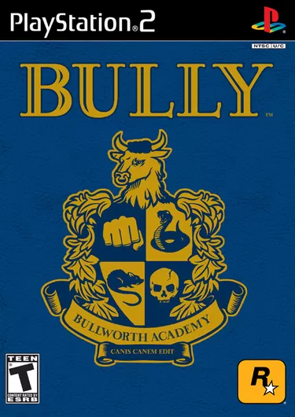

Bully
"Bully" é um jogo eletrônico de ação e aventura desenvolvido pela Rockstar Vancouver e lançado pela Rockstar Games. Lançado originalmente para PlayStation 2 em 2006, o jogo se passa em um ambiente escolar fictício chamado Bullworth Academy. O jogador assume o papel de Jimmy Hopkins, um adolescente problemático que deve navegar pelos desafios da vida escolar, incluindo lidar com valentões, fazer amigos e cumprir tarefas escolares. O jogo recebeu elogios pela sua narrativa envolvente e pela representação detalhada do ambiente escolar, mas também gerou controvérsias devido ao seu conteúdo e temas relacionados ao bullying.
